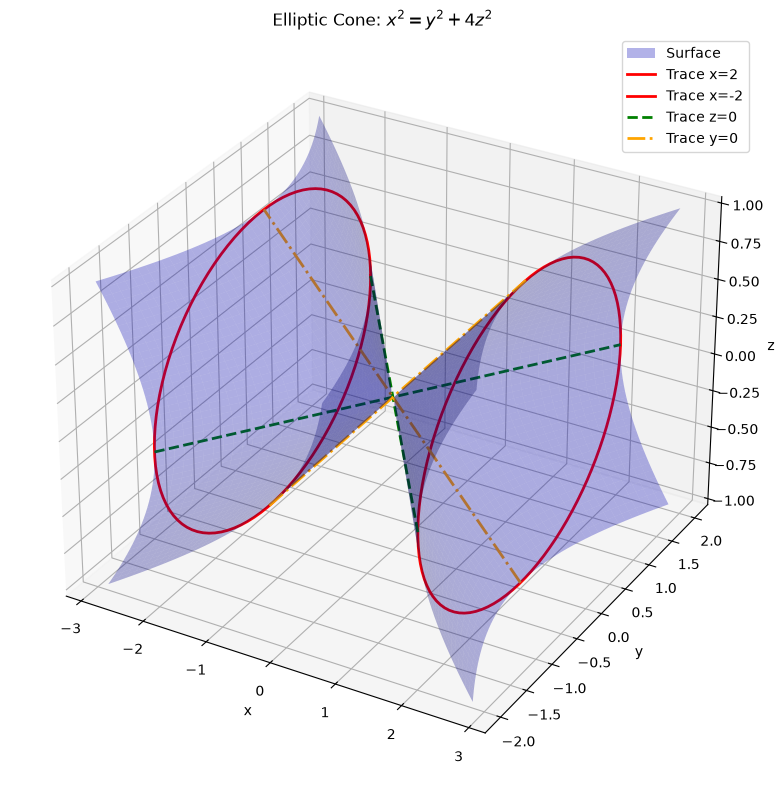
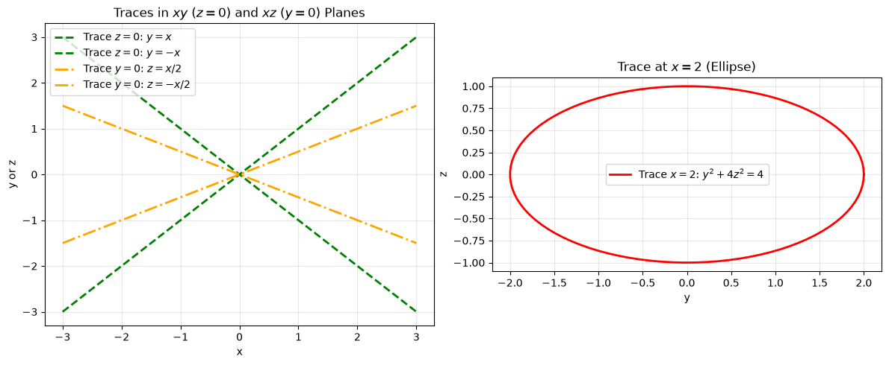
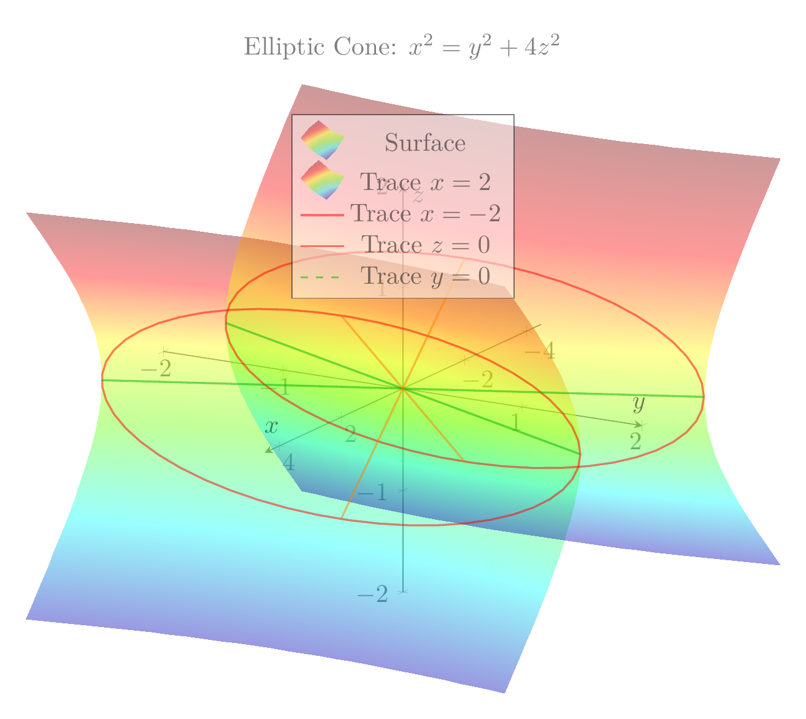
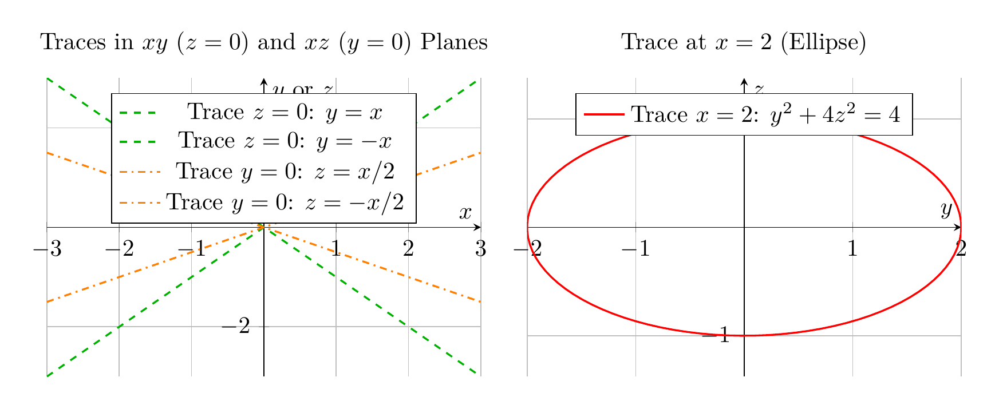

Path: mcma-Qwen3.5-397B-A17B/calculus-12.6.13/chat_20260823_213318_319631_utc_0800
Problem
Please solve the math problem in the image.

End of problem
Answer
# Solution: Identifying and Sketching the Surface $x^2 = y^2 + 4z^2$
## Step 1: Identify the Type of Surface
The given equation is:
$$x^2 = y^2 + 4z^2$$
This is a **quadric surface**. To identify it, we analyze the traces (cross-sections) in various planes.
## Step 2: Analyze Traces
### Trace in the $yz$-plane ($x = k$, where $k$ is a constant)
Setting $x = k$ in the equation:
$$k^2 = y^2 + 4z^2$$
This can be rewritten as:
$$\frac{y^2}{k^2} + \frac{z^2}{(k/2)^2} = 1$$
This is the equation of an **ellipse** centered at the origin in the $yz$-plane, with:
- Semi-major axis of length $|k|$ along the $y$-direction
- Semi-minor axis of length $|k|/2$ along the $z$-direction
For example, when $x = 2$, we get the ellipse $y^2 + 4z^2 = 4$, or $\frac{y^2}{4} + \frac{z^2}{1} = 1$.
### Trace in the $xy$-plane ($z = 0$)
Setting $z = 0$:
$$x^2 = y^2 \quad \Rightarrow \quad x = \pm y$$
These are **two intersecting lines** passing through the origin in the $xy$-plane.
### Trace in the $xz$-plane ($y = 0$)
Setting $y = 0$:
$$x^2 = 4z^2 \quad \Rightarrow \quad x = \pm 2z$$
These are **two intersecting lines** passing through the origin in the $xz$-plane.
## Step 3: Identify the Surface
The characteristics we've found are:
- Elliptical cross-sections perpendicular to the $x$-axis
- Linear cross-sections through the origin in the $xy$ and $xz$ planes
- The surface extends infinitely in both the positive and negative $x$-directions
These are the defining features of an **elliptic cone** with its axis along the $x$-axis.
The standard form of an elliptic cone with axis along the $x$-axis is:
$$\frac{x^2}{a^2} = \frac{y^2}{b^2} + \frac{z^2}{c^2}$$
Our equation $x^2 = y^2 + 4z^2$ can be written as:
$$\frac{x^2}{1} = \frac{y^2}{1} + \frac{z^2}{(1/2)^2}$$
So we have $a = 1$, $b = 1$, and $c = 1/2$.
## Conclusion
The surface $x^2 = y^2 + 4z^2$ is an **elliptic cone** with:
- Axis along the $x$-axis
- Vertex at the origin $(0, 0, 0)$
- Elliptical cross-sections perpendicular to the $x$-axis
$\boxed{\text{Elliptic Cone}}$
---


\documentclass[border=10pt]{standalone}
\usepackage{pgfplots}
\pgfplotsset{compat=1.18}
\usepgfplotslibrary{colormaps}
\begin{document}
\begin{tikzpicture}
\begin{axis}[
xlabel=$x$,
ylabel=$y$,
zlabel=$z$,
title={Elliptic Cone: $x^2 = y^2 + 4z^2$},
view={120}{20},
axis lines=center,
domain=-2:2,
y domain=-2:2,
samples=30,
samples y=30,
colormap/bluered,
opacity=0.5,
grid=major,
width=12cm,
height=10cm,
legend style={at={(0.5,0.95)}, anchor=north},
]
% Surface: x = sqrt(y^2 + 4z^2)
\addplot3[surf, shader=interp, opacity=0.4, blue] ({sqrt(y^2 + 4*x^2)}, y, x);
% Surface: x = -sqrt(y^2 + 4z^2)
\addplot3[surf, shader=interp, opacity=0.4, blue] ({-sqrt(y^2 + 4*x^2)}, y, x);
% Trace x=2 (ellipse): y^2 + 4z^2 = 4
\addplot3+[domain=0:360, samples=50, red, thick, no marks]
({2}, {2*cos(x)}, {sin(x)});
% Trace x=-2 (ellipse)
\addplot3+[domain=0:360, samples=50, red, thick, no marks]
({-2}, {2*cos(x)}, {sin(x)});
% Trace z=0 (lines): x = +/- y
\addplot3+[domain=-2:2, samples=2, green!70!black, thick, dashed, no marks]
(x, x, 0);
\addplot3+[domain=-2:2, samples=2, green!70!black, thick, dashed, no marks]
(x, -x, 0);
% Trace y=0 (lines): x = +/- 2z
\addplot3+[domain=-1:1, samples=2, orange, thick, dashdotted, no marks]
(2*x, 0, x);
\addplot3+[domain=-1:1, samples=2, orange, thick, dashdotted, no marks]
(-2*x, 0, x);
\legend{Surface, Trace $x=2$, Trace $x=-2$, Trace $z=0$, Trace $y=0$}
\end{axis}
\end{tikzpicture}
\end{document}

\documentclass[border=10pt]{standalone}
\usepackage{pgfplots}
\pgfplotsset{compat=1.18}
\begin{document}
\begin{tikzpicture}
\begin{axis}[
xlabel=$x$,
ylabel={$y$ or $z$},
title={Traces in $xy$ ($z=0$) and $xz$ ($y=0$) Planes},
axis lines=center,
domain=-3:3,
samples=100,
grid=major,
width=8cm,
height=6cm,
legend style={at={(0.5,0.95)}, anchor=north},
ymin=-3, ymax=3,
]
% Trace z=0: y = x
\addplot+[green!70!black, thick, dashed, no marks] {x};
\addlegendentry{Trace $z=0$: $y=x$}
% Trace z=0: y = -x
\addplot+[green!70!black, thick, dashed, no marks] {-x};
\addlegendentry{Trace $z=0$: $y=-x$}
% Trace y=0: z = x/2
\addplot+[orange, thick, dashdotted, no marks] {0.5*x};
\addlegendentry{Trace $y=0$: $z=x/2$}
% Trace y=0: z = -x/2
\addplot+[orange, thick, dashdotted, no marks] {-0.5*x};
\addlegendentry{Trace $y=0$: $z=-x/2$}
\end{axis}
\end{tikzpicture}
\begin{tikzpicture}
\begin{axis}[
xlabel=$y$,
ylabel=$z$,
title={Trace at $x=2$ (Ellipse)},
axis lines=center,
domain=0:360,
samples=100,
grid=major,
width=8cm,
height=6cm,
legend style={at={(0.5,0.95)}, anchor=north},
axis equal,
]
% Trace x=2: y^2 + 4z^2 = 4 => y = 2cos(t), z = sin(t)
\addplot+[red, thick, no marks] ({2*cos(x)}, {sin(x)});
\addlegendentry{Trace $x=2$: $y^2 + 4z^2 = 4$}
\end{axis}
\end{tikzpicture}
\end{document}

End of answer